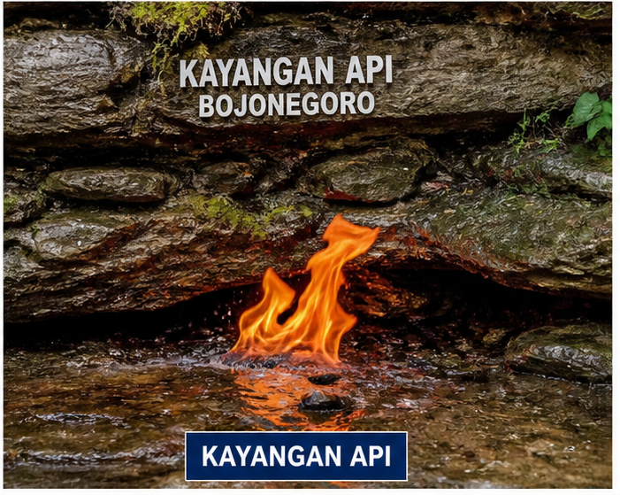
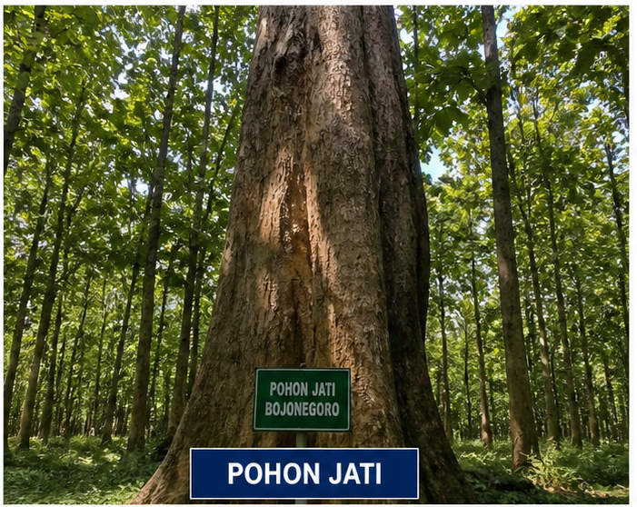
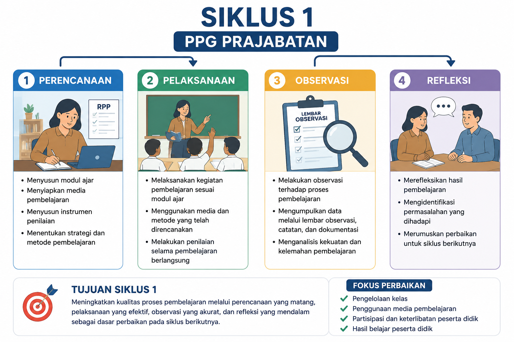
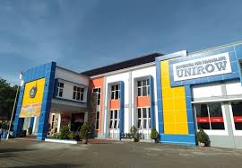
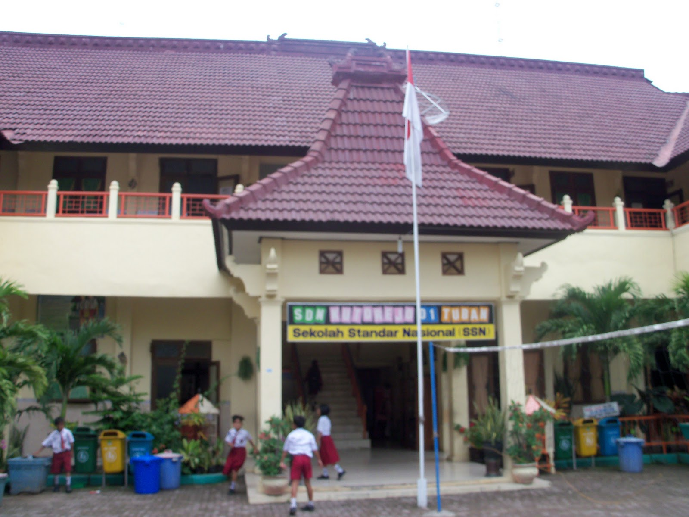

Profil
DEWI NUR OVILIA
Pernah menempuh kuliah di Universitas Terbuka, dengan mengambil jurusan PGSD. Mulai kuliah tahun 2015 dan lulus meraih gelar strata 1 PGSD pada tahun 2020.
Pada tahun 2026 mengikuti Program Pendidikan Profesi Guru di Universitas PGRI Ronggolawe Tuban.
Keunikan Daerah Bojonegoro
Kabupaten Bojonegoro merupakan salah satu kabupaten di Provinsi Jawa Timur yang dikenal memiliki kekayaan budaya, sumber daya alam, dan potensi wisata yang beragam. Bojonegoro terletak di bagian barat Provinsi Jawa Timur dan dilalui oleh Sungai Bengawan Solo yang menjadi sungai terpanjang di Pulau Jawa.

Ledre
Ledre merupakan makanan khas Bojonegoro yang terbuat dari pisang dengan bentuk tipis dan renyah menyerupai semprong. Cita rasa manis dan aroma khas pisang menjadikan ledre sebagai oleh-oleh favorit dari Bojonegoro.

Kayangan Api
Kayangan Api adalah wisata alam terkenal berupa api abadi yang tidak pernah padam. Tempat ini memiliki nilai sejarah dan sering digunakan sebagai lokasi pengambilan api untuk acara nasional.

Migas
Bojonegoro dikenal sebagai salah satu daerah penghasil minyak dan gas bumi terbesar di Indonesia. Keberadaan sektor migas memberikan pengaruh besar terhadap perkembangan ekonomi daerah.

Kayu Jati
Kayu jati Bojonegoro terkenal memiliki kualitas yang sangat baik. Hutan jati menjadi salah satu kekayaan alam yang mendukung industri mebel dan kerajinan kayu

Inspirasi dan Tujuan
Saya terinspirasi mengikuti Program Pendidikan Profesi Guru (PPG) Prajabatan karena memiliki keinginan kuat untuk menjadi pendidik profesional yang mampu memberikan dampak nyata bagi peserta didik. Guru bukan hanya sebagai penyampai materi, tetapi sebagai pembimbing, motivator, dan fasilitator dalam membentuk karakter generasi masa depan.
Selain itu, perkembangan zaman yang pesat menuntut guru untuk adaptif terhadap teknologi dan inovasi pembelajaran. Hal ini mendorong saya untuk terus belajar dan meningkatkan kompetensi melalui program PPG agar dapat menciptakan pembelajaran yang kreatif, menyenangkan, dan bermakna.
Inspirasi lainnya datang dari pentingnya peran guru dalam mewujudkan pendidikan yang berkualitas dan merata, terutama di tingkat sekolah dasar. Saya ingin berkontribusi dalam menciptakan lingkungan belajar yang inklusif, humanis, dan berpusat pada peserta didik.
Menjadi Guru Profesional
Mengembangkan kompetensi pedagogik, profesional, sosial, dan kepribadian sesuai standar guru di Indonesia.
Meningkatkan Kualitas Pembelajaran
Mampu merancang dan melaksanakan pembelajaran inovatif berbasis kurikulum terbaru yang berpusat pada peserta didik.
Menguasai Teknologi Pendidikan
Memanfaatkan teknologi digital sebagai media pembelajaran yang efektif dan interaktif.
Membentuk Karakter Peserta Didik
Berperan aktif dalam menanamkan nilai-nilai karakter seperti disiplin, tanggung jawab, dan gotong royong.
Mengembangkan Diri Secara Berkelanjutan
Menjadi pembelajar sepanjang hayat yang terus meningkatkan kompetensi melalui refleksi dan pelatihan.
Siap Terjun ke Dunia Pendidikan
Memiliki kesiapan mental, keterampilan, dan pengalaman praktik mengajar di sekolah.
Artefak
Siklus 1

Siklus 2

Siklus 3


UNIROW
Universitas PGRI Ronggolawe Tuban (UNIROW) merupakan salah satu perguruan tinggi yang berperan penting dalam mencetak generasi unggul, berkarakter, dan profesional di bidang pendidikan maupun nonkependidikan. Melalui berbagai program akademik dan pengembangan kompetensi, UNIROW terus berkomitmen menghadirkan pendidikan berkualitas yang adaptif terhadap perkembangan zaman dan teknologi. Sebagai Lembaga Pendidikan Tenaga Kependidikan (LPTK), UNIROW turut mendukung terciptanya calon guru profesional melalui Program Pendidikan Profesi Guru (PPG).

PPL
UPT SD Negeri Kutorejo 1 Tuban
SDN Kutorejo 1 Tuban merupakan sekolah dasar negeri yang menjadi tempat pelaksanaan Praktik Pengalaman Lapangan (PPL) Program Pendidikan Profesi Guru (PPG) Prajabatan. Sekolah ini berada di lingkungan yang strategis dan mendukung kegiatan pembelajaran yang aktif, kreatif, dan inovatif.
Melalui kegiatan PPL di SDN Kutorejo 1 Tuban, mahasiswa PPG memperoleh pengalaman nyata dalam mengelola pembelajaran, berinteraksi dengan peserta didik, serta mengembangkan kompetensi pedagogik dan profesional sebagai calon guru masa depan.
Sekolah ini beralamat di Jalan Veteran No. 12, Kutorejo, Kecamatan Tuban, Kabupaten Tuban, Jawa Timur.
Refleksi
Perbaikan berkelanjutan.
Praktik
Siklus pembelajaran.
Penilaian
Peningkatan kompetensi.
Model Guru
Profesional dan inovatif.
Kesimpulan
Siap menjadi guru profesional.
Kontak
Email: emailkamu@gmail.com
WA: 08xxxxxxxxxx